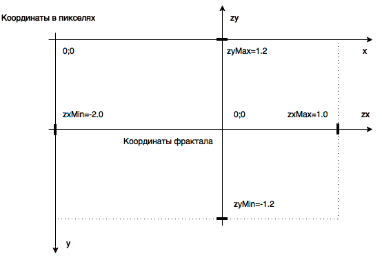
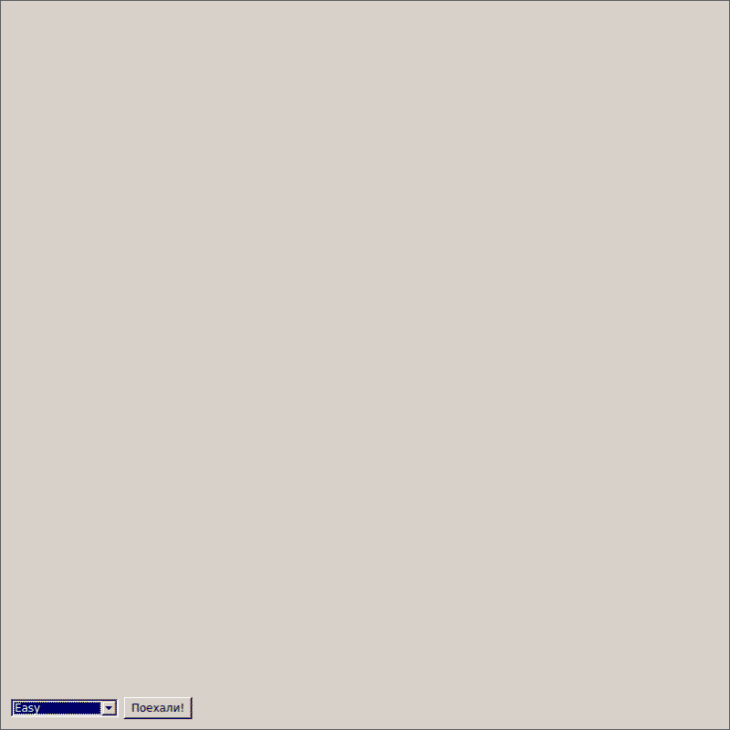
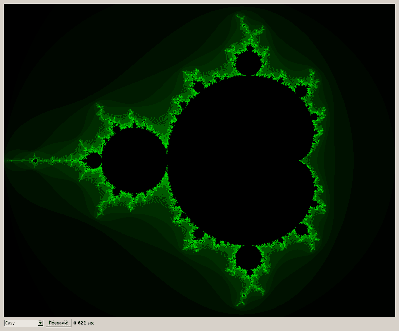

В современном мире рост производительности компьютеров в первую очередь достигается не за счет увеличения скорости работы каждого отдельного ядра, а обусловлен наращиванием их количества. С текущим уровнем технологий такая тенденция будет наблюдаться еще как минимум некоторое время. Поэтому для решения все более сложных и объемных задач разработчики программного обеспечения вынуждены использовать те или иные приемы параллельных вычислений. Одним из таких приемов является использование нескольких программных потоков в рамках единого процесса. Здесь будут рассмотрены основные средства Qt, которые позволят задействовать многопоточность в Qt-программах.
Содержание
Тестовая площадка: рисование фрактала Мандельброта
Чтобы можно было проводить какие-либо сравнения, различные варианты использования потоков мы будем рассматривать на примере решения одной и той же задачи. В качестве такой задачи возьмем построение фрактала Мандельброта.
Сначала определим виджет, а также несколько вспомогательных классов и структур, которые позволят нам легко добавлять новые версии решений:
#ifndef FRACTALVIEW_H
#define FRACTALVIEW_H
#include <QWidget>
#include <QTime>
class QLabel;
class QComboBox;
struct FractalConf {
double zxMin = -2.0;
double zxMax = 1.0;
double zyMin = -1.2;
double zyMax = 1.2;
double step = 0.0026;
int maxIterCount = 0xFF;
int getImageWidth() const {
if( step <= 0.0 ) {
return -1;
}
return ceil( ( zxMax - zxMin ) / step );
}
int getImageHeight() const {
if( step <= 0.0 ) {
return -1;
}
return ceil( ( zyMax - zyMin ) / step );
}
};
class FractalDrawAlgorithm;
// Область отображания фрактала
class FractalView : public QWidget {
Q_OBJECT
public:
FractalView( const FractalConf& fractalConf, QWidget* parent = 0 );
~FractalView();
void addAlgorithm( const QString& name, FractalDrawAlgorithm* algorithm );
public slots:
void onStarted();
void onPartAvailable( int x, int y, const QImage& img );
void onFinished();
private:
QLabel* m_lblView;
QLabel* m_lblTime;
QComboBox* m_cmbAlgorithm;
QTime m_time;
FractalConf m_fractalConf;
QImage m_img;
QVector< FractalDrawAlgorithm* > m_algorithms;
};
// ****************************************************************************************************
class FractalDrawAlgorithm : public QObject {
Q_OBJECT
public:
FractalDrawAlgorithm( QObject* parent = 0 ) : QObject( parent ) { }
void setFractalConf( const FractalConf& fractal ) {
m_fractalConf = fractal;
}
public slots:
virtual void start() = 0;
signals:
void partAvailable( int x, int y, const QImage& img );
void ready();
protected:
FractalConf m_fractalConf;
};
#endif // FRACTALVIEW_H
Структура FractalConf определяет конфигурацию фрактала, который мы хотим нарисовать. Она содержит поля zxMin, zxMax, zyMin, zyMax, step и maxIterCount.

На графике мы видим две координатные сетки: внешнюю с координатами (x; y) и внутреннюю с координатами (zx, zy). Обе они определяют одно и то же изображение фрактала. Однако внешняя соответствует его графическому представлению в пикселях, которое предназначено для вывода на экран с началом координат в левом верхнем углу. Внутренняя же определяет математическое представление фрактала Мандельброта с более традиционным расположением начала координат. Обратим внимание, что на осях zx и zy отложено по две точки: zxMin=-2.0, zxMax=1.0 и zyMin=-1.2, zyMax=1.2, которые задают границы прямоугольной области. Эти значения и определены в одноименных полях структуры FractalConf.
Кроме того, нам необходимо выбрать шаг, с которым мы будем двигаться по внутренней координатной сетке фрактала. Это связано с тем, что рисовать фрактал мы будем по точкам (пикселям). И расстояние от предыдущей до следующей точки должно быть постоянным. Такое расстояние определено в поле структуры FractalConf и называется step.
Для каждой точки фрактала Мандельброта с координатами (zx; zy) определяется некая «глубина», для расчета которой используется рекуррентный алгоритм. Чтобы этот алгоритм не оказался бесконечным, необходимо определить максимальную глубину, то есть максимальное количество итераций, после выполнения которых мы считаем, что глубина найдена. Это значение также определено в структуре FractalConf в поле с maxIterCount.
Чтобы изобразить фрактал нам нужно «раскрасить» каждую его точку на основе найденной глубины, а также перейти от математических координат фрактала к координатам в пикселях. О решении этих задач мы поговорим немного позже. Однако заметил, что найти размеры изображения в пикселях, которое мы будем рисовать, совсем не трудно, что и демонстрируют следующие функции-члены структуры FractalConf:
|
2 3 4 5 6 7 8 9 10 11 12 13 |
return ceil( ( zxMax - zxMin ) / step ); |
Дальше поговорим о классе виджета FractalView. В конструкторе мы заранее передаем ему конфигурацию фрактала FractalConf. То есть мы будем рисовать один и тот же фрактал Мандельброта разными методами, которые представим с помощью абстрактного класса FractalDrawAlgorithm. Конкретные алгоритмы, реализующие этот класс, можно будет добавлять к экземплярам класса FractalView с помощью функции-члена addAlogrithm(). Получаем некую вариацию паттерна Стратегия.
Связь между виджетом и алгоритмами определяется с помощью сигналов и слотов. Для запуска алгоритма используется виртуальный слот FractalDrawAlgorithm::start(), который будет вызываться в приложении по нажатию кнопки на виджете. О результатах своей работы алгоритмы будут сообщать с помощью сигналов partAvailable() и ready(). Первый будет привязан к слоту виджета onPartAvailable() и вернет промежуточный результат построения фрактала в виде координат (x; y) и изображения QImage. Такое решение связано с тем, что мы будем рисовать фрактал в нескольких потоках по частям. Поэтому для наглядности имеет смысл отображать не весь фрактал сразу, а компоновать его из полученных кусочков, как мозаику. Это повышает отзывчивость интерфейса приложения и пользователям кажется, что оно работает быстрее. Когда же алгоритм завершит свою работу, то он должен вызвать сигнал ready(), чтобы сообщить виджету, что все готово. Нам понадобится это для того, чтобы делать замеры времени и сравнить скорость работы различных версий алгоритмов.
Рассмотрим реализацию класса FractalView:
Как видим, здесь нет ничего необычного. В конструкторе мы просто компонуем элементы UI на нашем виджете. Кроме того, заметьте, что еще в конструкторе мы проинициализировали изображение m_img с шириной и высотой, которую будет иметь фрактал с переданной конфигурацией. На виджете у нас будет всего одна кнопка, комбо-бокс и несколько лейблов. Кнопка будет запускать алгоритм рисования фрактала в слоте виджета onStarted(). Причем в этом слоте мы запускаем таймер, с помощью которого определим время, затраченное на работу алгоритма. Выбор алгоритма осуществляется с помощью выпадающего списка.
В функции-члене addAlgorithm() сигналы добавленных алгоритмов привязываются к слотам onPartAvalilabe() и onFinished(). Об их назначении мы уже говорили. Однако заметим, что склеивание частей фрактала осуществляется с помощью QPainter и его функции-члена drawImage(). Затем получившееся изображение выводится вызовом setPixmap(). А после поступления сигнала готовности в слот onFinished() мы просто выводим прошедшее с начала запуска алгоритма время.
В результате у нас получился такой виджет:

Пришло время добавить алгоритмы.
Начнем с однопоточного алгоритма построения фрактала. Без него нам все равно не обойтись. Возьмем простейшую реализацию функции, которая нарисует нам фрактал Мандельброта с заданной конфигурацией:
Функция makeIter() находит глубину точки фрактала, о которой мы говорили в предыдущем разделе. Ее реализация стандартна, поэтому останавливаться на ней не будем. Нашей рабочей функцией является drawFractal(). Она превращает конфигурацию фрактала FractalConf в соответствующее изображение QImage, которое мы можем отобразить на экране. Сначала мы просто создаем пустое изображение QImage, на котором будем рисовать. Его ширина и высота в пикселях определяются с помощью подготовленных ранее функций getImageWidth() и getImageHeight().
Построение фрактала мы проводим в двойном цикле по пиксельной координатной сетке изображения (x; y) с началом координат в левом верхнем углу. Параллельно с x и y мы двигаемся по математическим координатам zx и zy в заданной конфигурацией фрактала области. Для координат изображения в пикселях все совсем просто. У нас есть известное количество пикселей с двумя координатами и каждый из них должен быть заполнен. Ровно это мы и делаем, проходя в цикле по всему изображению. Но по точкам в математической координатной сетке фрактала (zx, zy) так легко ходить мы не можем. И здесь на помощь приходит шаг step. Таким образом, мы начинаем с точек (x; y) = (0; 0) и (zx; zy) = (zxMin; zyMin). Внутренний цикл проходит по оси y, поэтому далее последуют точки (x; y) = (0; 1) и (zx; zy) = (zxMin; zyMin + step). Затем мы попадем в точки (x; y) = (0; 2) и (zx; zy) = (zxMin; zyMin + 2 * step). И так до тех пор, пока не пройдем каждый пиксель изображения, а заодно и соответствующие точки фрактала в нужной нам области. Здесь стоит обратить внимание, что направление роста осей y и zy будут отличаться, поскольку они направлены в разные стороны, но нас это не сильно волнует, так как фрактал вдоль этих осей симметричен.
Как и для склейки частей фрактала, в drawFractal() используется QPainter, однако мы рисуем по точкам, поэтому используется функция-член drawPoint(). Для каждой точки мы сначала вычисляем глубину с помощью makeIter(), а затем полученное значение превращаем в цвет. Если глубина достигла установленного максимума, то делаем точку черной, иначе определяем цвет на основе получившейся глубины с помощью выражения count << 11. Вообще, существует множество способов раскраски фрактала Мандельброта, но я для примера выбрал один из простейших.
Теперь реализуем первый алгоритм рисования, который назовем EasyFractalDrawAlgorithm. Он и правда простой:
|
2 3 4 5 6 7 8 9 10 11 12 |
class EasyFractalDrawAlgorithm : public FractalDrawAlgorithm { explicit EasyFractalDrawAlgorithm( QObject* parent = 0 ) : FractalDrawAlgorithm( parent ) { } |
Этот алгоритм основан на приведенной ранее функции drawFractal(). Отдельных частей мы здесь не формируем, а возвращаем сразу весь фрактал. А затем сразу же сообщаем о том, что все готово.
Напишем функцию main(), и проведем первое испытание:
|
2 3 4 5 6 7 8 9 10 11 12 |
int main( int argc, char* argv[] ) { w.addAlgorithm( "Easy", new EasyFractalDrawAlgorithm( &w ) ); |
Вот результат запуска на моем компьютере:

Построение заняло 621 миллисекунду. Не так уж и плохо, но это все же заметная глазу пауза. К тому же, приложение на это время стало неотзывчивым, поскольку главный поток был занят вычислениями и не мог реагировать на действия пользователя.
Пришло время потоков приступить к выполнению своих обязанностей.
Прежде чем перейти к реализации многопоточной версии алгоритма, определим вспомогательный класс FractalDrawTask:
Он наследует классы QObject и QRunnable. Первый нужен для того, чтобы мы могли пользоваться сигналами и слотами, а причины использования второго станут понятны немного позже. Конструктор класса FractalDrawTask принимает координаты x и y, а также конфигурацию фрактала FractalConf. Координаты в самом классе напрямую не используются, однако он возвращает их с помощью сигнала ready() в слоте run() вместе с изображением фрактала, построенным по заданной конфигурации.
Теперь посмотрим на первую многопоточную версию алгоритма:
Количество потоков, которое будет задействовано алгоритмом, мы можем указать через конструктор класса в параметре threadCount. Использоваться этот параметр будет в реализации слота start(). Рассмотрим ее поподробнее. Ключевым моментом здесь является то, что мы делим ожидаемую высоту готового изображения фрактала в пикселях на количество потоков. Например, для четырех потоков имеем:
Расстояние между началом и концом каждой получившейся горизонтальной полосы постоянно и равно высоте изображения в пикселях, разделенной на количество потоков. Зная высоту одной полосы в пикселях, которую обозначили BLOCK_HEIGHT, легко найти соответствующую высоту полосы во внутренней системе координат (zx; zy). Для этого просто умножим BLOCK_HEIGHT на величину шага step, определенную во FractalConf. Далее следует простой цикл, в котором мы двигаемся по оси y с шагом, равным BLOCK_HEIGHT. Параллельно мы двигаемся по оси zy с найденным ранее шагом BLOCK_STEP.
Для каждой полосы мы определяем соответствующую конфигурацию FractalConf и передаем ее вместе с координатами x и y в слот start(). В этом слоте происходит непосредственное создание и вызов потока для обработки переданной полосы фрактала. Сначала мы создаем новый объект задачи FractalDrawTask, передавая ей переданные параметры. Далее определяем новый поток, в котором будет решаться эта задача. Но перед запуском потока связываем сигналы и слоты:
Первые два коннекта определяют связь между завершением потока и удалением объектов, чтобы предотвратить утечки памяти. Затем мы привязываем сигнал ready() к слоту onPartReady(), в котором мы перенаправим результаты в виджет, чтобы он смог отобразить подготовленную часть фрактала. Кроме того, в слоте onPartReady() мы также проверим, была ли эта часть последней или есть еще. Если окажется, что частей больше нет, то мы вызовем сигнал ready(). Завершение работы потока также привязывается к сигналу ready() объекта task. А запуск слота run() для решения задачи связывается с сигналом потока started().
Важно не забыть перевести объект task для работы в потоке и все запустить:
|
2 |
Для добавления этого алгоритма в наш виджет достаточно добавить в функции main() строку следующего вида:
|
w.addAlgorithm( "MultiThreaded", new MultiThreadedFractalDrawAlgorithm( 8, &w ) ); |
Мой процессор имеет 8 ядер, поэтому такой вариант показал максимальную производительность и составил в среднем 180 миллисекунд. Для однопоточной реализации была 621 миллисекунда, то есть скорость возросла примерно в три с половиной раза. Я пробовал запускать обе версии со значениями параметра maxIterCount побольше и разница оказалась примерно такой же. Однако увеличение скорости в 3,5 раза уже серьезный показатель. Более того, многопоточная версия не блокирует графический интерфейс пользователя и практически сразу начинает выдавать фрагменты изображения с фракталом, а это лишний раз показывает, что приложение не зависло, а делает свою работу.
Оказывается, рассмотренный выше пример можно реализовать еще проще. Для этого в Qt существует QThreadPool. Рассмотрим соответствующую версию алгоритма:
Новый алгоритм ThreadPoolFractalDrawAlgorithm наследует класс MultiThreadedFractalDrawAlgorithm, чтобы повторно использовать цикл прохода по полосам фрактала и всего лишь реализует свою версию слота start(). А в ней все значительно лаконичнее, чем было у его предка. Мы также создаем объект задачи task, но теперь достаточно лишь привязать сигнал ready() с нашим слотом-обработчиком onPartReady(), а обо всем остальном уже позаботится QThreadPool. Он и поток создаст, и задачу запустит и память освободит. А что еще нужно? — Чтобы быстро работало. Но и здесь все прекрасно. В среднем производительность ничем не отличается от версии, где мы сами создавали потоки, поэтому для реализации простой логики взаимодействия потоков, как у нас, этот подход является наилучшим.
Но не так быстро. А откуда QThreadPool знает, каким образом нужно запускать наш task? — Все очень просто. Помните, при объявлении класса FractalDrawTask мы наследовали его от QObject и QRunnable? Так вот второй унаследованный класс здесь нам и пригодился. Он имеет виртуальную функцию-член run(), которую мы определили в виде слота и реализовали. А QThreadPool при вызове start() как раз и ожидает указатель на QRunnable, для которого потом запускает run() в потоке.
Еще одно преимущество QThreadPool заключается в том, что он может компоновать очередь задач, если все выделенные потоки уже задействованы. Когда поток освобождается, то он автоматически переключается на решение одной из задач в очереди. Это очень удобно, если количество потоков существенно меньше числа задач, которые мы ему передаем.
Я сначала сомневался, стоит ли включать сюда этот вариант, но решил, что для полноты картины не помешает упомянуть и его. Однако заранее отмечу, что такой вариант использования, который мы сейчас рассмотрим, является допустимым, но не целевым. Думаю, что по многопоточности будут еще заметки и в них мы уже рассмотрим более подходящий пример. А для решения нашей текущей задачи по построению фрактала лучше использовать QThreadPool. Но перейдем к делу. Вот реализация на основе QtConcurrent::run():
Получившаяся реализация чем-то похожа на то, что было в версии на основе QThreadPool. Однако здесь мы вынуждены явно установить соединение сигнала ready() и слота deleteLater() для удаления объекта. Кроме того, нам приходится передавать указатель на функцию run(), которую мы хотим вызвать. Скорость работы этой версии, как и ожидалось, ничем не хуже и не лучше других рассмотренных многопоточных решений. Если выбирать между этой реализацией и вариантом на основе QThread, то, конечно, более предпочтительным выглядит QtConcurrent. Однако повторю еще раз, что сила QtConcurrent заключается в решении другого типа задач, но об этом мы поговорим уже в другой заметке (см. Пример использования QtConcurrent).
В этой заметке мы коротко прошлись по базовым принципам работы с потоками в Qt-приложениях. Рассмотрели несколько вариантов алгоритма построения фрактала Мандельброта с применением QThread, QThreadPool и QtConcurrent. Убедились, что прирост производительности этих решений по сравнению с однопоточной версией и правда есть, причем не маленький. И остановились на том, что для рассмотренной задачи наиболее оптимальным выбором является использование QThreadPool, который сочетает в себе простоту использования и гибкость работы.